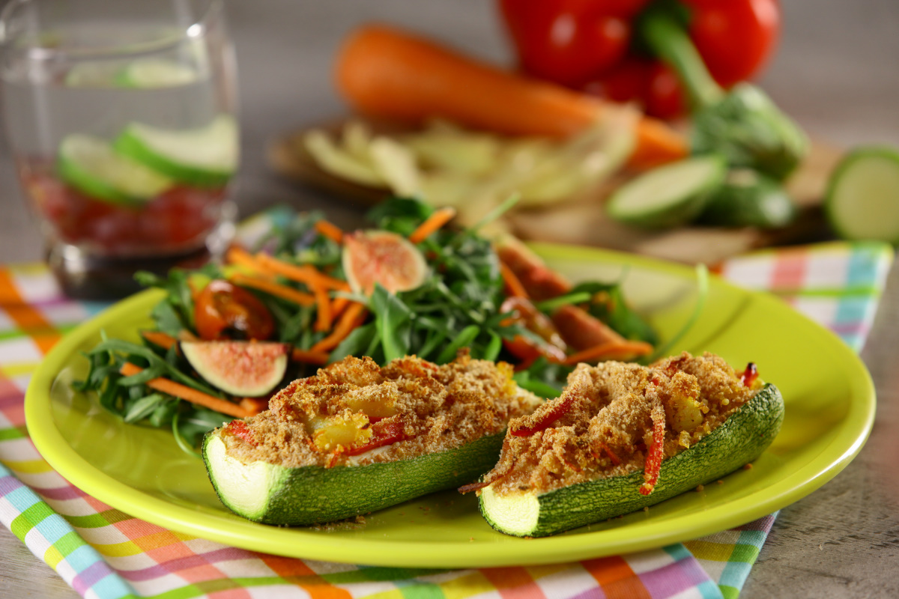

CALABAZA RELLENA DE VEGETALES Y QUÍNOA
Estas calabazas rellenas te van llenar de energía con su gran aporte de fibra con un toque delicioso y condimentado de curry, una opción muy fácil y saludable de preparar.
Ingredientes
- 2 piezas de calabaza italiana
- 2 cucharadas de aceite de oliva
- 1 cucharada de cebolla
- 2 piezas de zanahoria cortada en tiritas
- 1 pieza de papa cortada en cubos
- 2 piezas de pimiento rojo cortado en tiritas
- 1 taza de quinoa cocida
- 1 cucharadita de curry
- suficiente de pan molido
- al gusto de sal y pimienta
Preparacion
-
Precalienta el horno a 180°C.
-
Corta las calabazas a lo largo y retira el relleno. Coloca en un bowl con agua y reserva.
-
En una sartén a fuego medio agrega el aceite y añade la cebolla, agrega las zanahorias, la papa, el pimiento rojo y cocina por 3 minutos, sazona con curry sal y pimienta.
-
En una charola coloca las calabazas y agrega el relleno, coloca encima pan molido y hornea por 10 min.